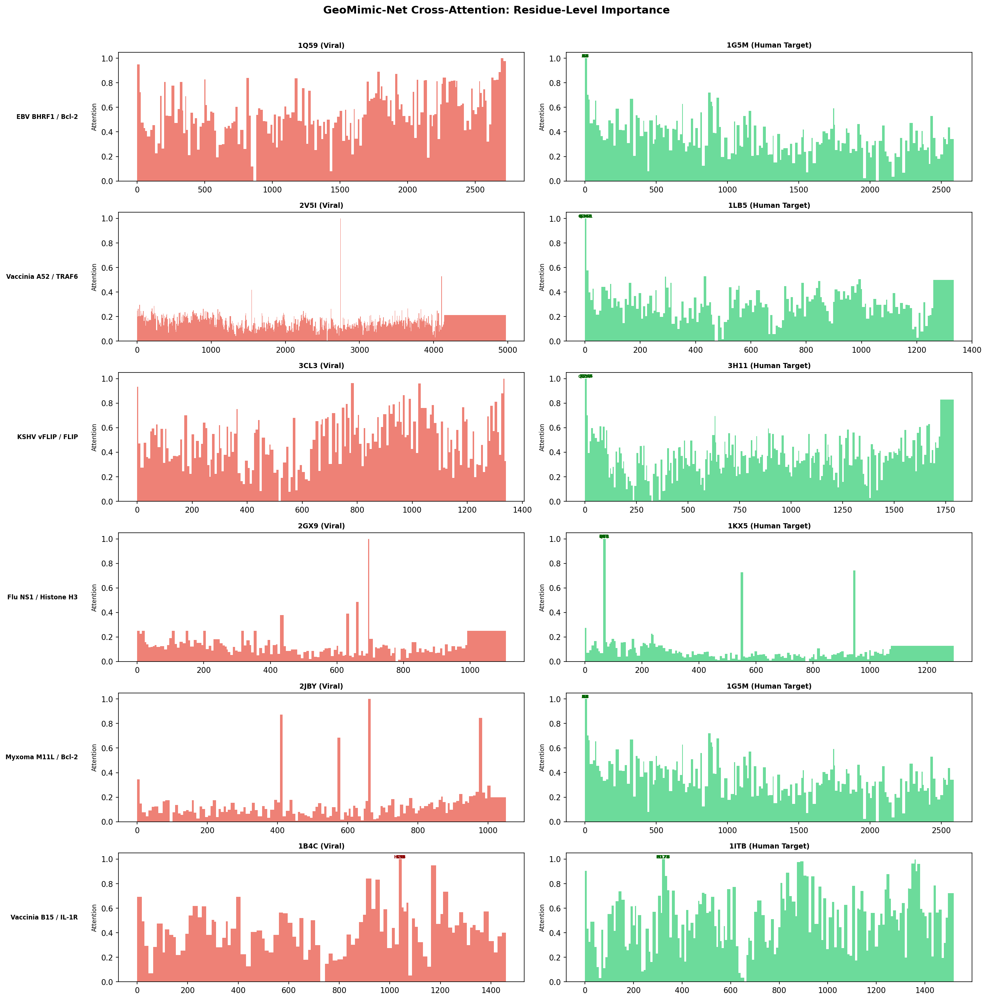
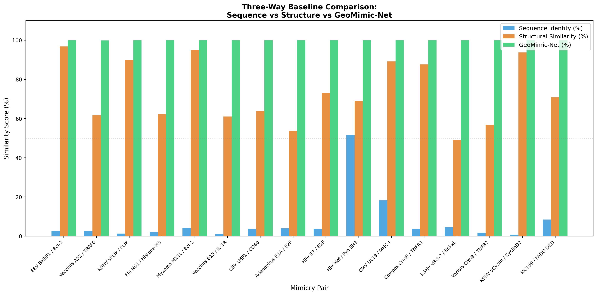
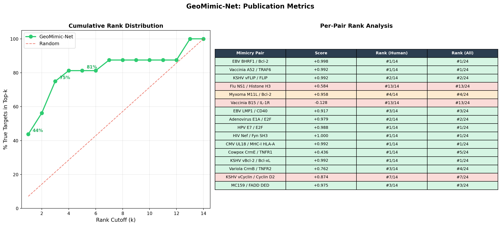

Predicting Structural Mimicry Beyond Sequence
Molecular mimicry is a critical mechanism by which viruses evade the host immune system. Traditional methods relying on sequence alignment overlook structurally similar but sequentially divergent proteins. GeoMimic-Net solves this using strict 3D geometric AI.
The Problem
Standard tools like BLAST completely miss structural mimicry because proteins can share identical 3D folds with negligible sequence overlap. This hides autoimmune triggers and viral evasion mechanisms.
The Solution
We leverage Equivariant Graph Neural Networks (EGNNs) to map 3D atomic coordinates into a rotationally invariant embedded space, fusing it with multimodal ESM-2 semantic features.
Model Architecture
Input Graphs
Cα atoms as nodes, RBF-encoded edges (<10Å)
Siamese EGNN
4 Layers, SE(3) Equivariant Message Passing
Multimodal Fusion
ESM-2 Embeddings & Cross-Attention
Attention Pooling
Per-residue importance & Contrastive Loss
Inference Engine
Select a pair to run the mimicry scan.
Awaiting inference initiation...
Inference Complete
Attention Map

High attention residues (red peaks) correlate with known binding interfaces.
Performance vs Baselines

ROC Analysis

Publication Metrics
